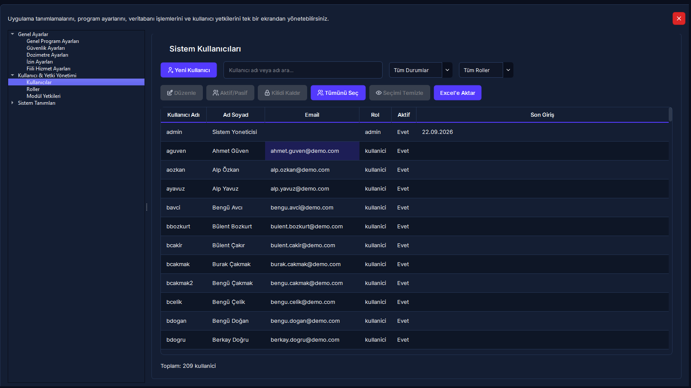
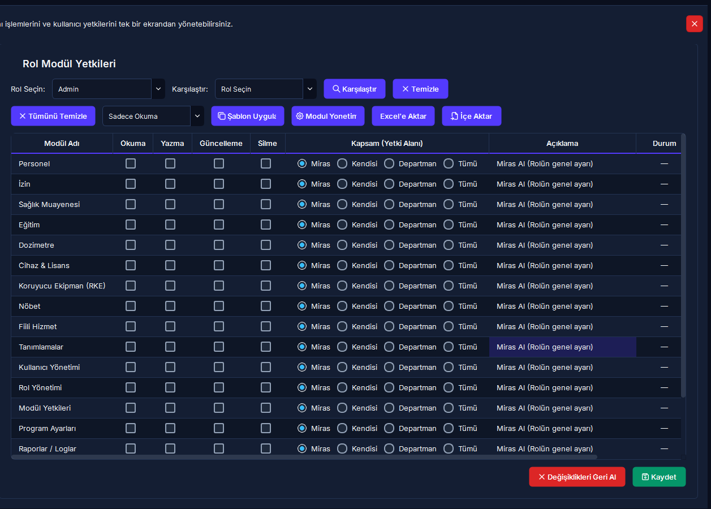

Kullanıcı ve Rol Yönetimi
Rol Tabanlı Erişim Kontrolü (RBAC), modül düzeyinde 4 kademeli veri kapsamı (Miras, Kendisi, Departman, Tümü), kişiye özel yetki istisnaları, rol bazlı yönetici onay zorunluluğu ve birim sorumlusu ile saha görev tahsisini yönetmenizi sağlar.
Kısa Reçete: Yeni Kullanıcı Açma ve Birim Sorumlusu Atama
Yeni başlayan personele sağlık özlük kartıyla bağlantılı kullanıcı hesabı tanımlamak ve departman sorumlusunu veya saha görevlerini belirlemek.
[Kullanıcı İşlemleri] sekmesinde [Yeni Kullanıcı] butonuna basıp rol ve [Personel Bağlantısı] seçimini kaydedin. Ardından [Birim Sorumlulukları] sekmesinden departmanı seçip [Sorumluyu Değiştir] veya [Görev Ata] butonunu kullanın.
Kullanıcı yalnızca yetkili olduğu modüllere ve veri kapsamına erişir; departmana tek asli birim sorumlusu atanır ve RKE, Cihaz, Dozimetre, Ortam Dozu ile Eğitim saha görevleri personellere dağıtılır.
5N1K Kural ve Arayüz Çözümleme Tablosu
Kullanıcı yönetimi, rol yetki matrisi ve güvenlik kilitlerinin operasyonel kuralları.
Kritik Sahada Yanlış Bilinen Kurallar (Mit Avcısı)
Süreç Akış Şeması
Yetki İstisnası Var mı?"} B -->|Evet| C["Özel Modül İzni ve Kapsamı Uygulanır"] B -->|Hayır| D["Rolün Modül Yetki Matrisi Okunur"] end subgraph S2 ["2. AŞAMA: EYLEM VE VERİ KAPSAMI"] direction LR E{"Okuma / Yazma
Yetkisi Var mı?"} -->|Hayır| F["Ekran veya İşlem Butonu Gizlenir"] E -->|Evet| G{"Kapsam Sınırı"} G -->|Kendisi / Departman| H["Kişisel veya Birim Verisi Filtrelenir"] G -->|Tümü| I["Tüm Kurum Verisi Açılır"] end subgraph S3 ["3. AŞAMA: EVRENSEL ONAY DENETİMİ"] direction LR J{"Rolde Yönetici Onayı
Zorunlu mu?"} -->|Evet| K["İşlem Merkezi Onay Kuyruğuna Düşer"] J -->|Hayır| L(["Değişiklik Anında Kaydedilir"]) end C & D ==> E H & I ==> J
- Oturum ve Rol Çözümleme: Kullanıcı giriş yaptığında önce kişiye özel modül istisnaları, yoksa bağlı olduğu rolün yetki matrisi yüklenir.
- Eylem ve Veri Kapsamı: Okuma izni olmayan modüller gizlenir; yetkili modüllerde kayıtlar seçilen kapsam sınırına (Kendisi, Departman veya Tümü) göre süzülür.
- Evrensel Onay Denetimi: Rolünde yönetici onayı zorunlu tutulan kullanıcıların kritik veri değişiklikleri doğrudan uygulanmayıp Merkezi Onay paneline yönlendirilir.
Arayüz Ekran Görünümleri


Adım Adım İşlem Rehberi
1. Kullanıcı Hesabı Kilit Açma ve Kişiye Özel Yetki İstisnası Tanımlama
- [Kullanıcı ve Rol Yönetimi] > [Kullanıcı İşlemleri] sekmesinden arama kutusu veya durum/rol filtreleriyle ilgili kullanıcıyı bulun.
- Hatalı şifre denemesiyle bloke olmuş bir kullanıcıyı seçip araç çubuğundaki [Kilidi Kaldır] butonuna basarak hesabı anında açın.
- Rolünü değiştirmeden belirli modüllerde farklı izin veya kapsam vermek için satırı seçip [Kişiye Özel Yetkiler] panelini açın; ilgili modülde özel izin kutusunu işaretleyip izinleri ayarladıktan sonra [Özel Yetkileri Kaydet] butonuna tıklayın.
2. Rol Oluşturma, Klonlama, Şablon Uygulama ve Karşılaştırma
- [Roller ve Yetkiler] sekmesine geçin; sıfırdan rol tanımlamak için [Yeni Rol Ekle] butonunu kullanın veya mevcut bir rolün yetkilerini devralmak için [İşlemler] > [Rolü Kopyala] seçeneğini tıklayın.
- Matrisi tek tek işaretlemek yerine üstteki [Şablon Uygula] açılır kutusundan hazır bir profil (Sadece Okuma, Operasyon veya Tam Yetki) uygulayıp gerekli modüllerde kapsamı özelleştirin ve [Kaydet] butonuna basın.
- İki rol arasındaki izin ve kapsam farklarını denetlemek için [Karşılaştır] butonuna tıklayıp farklı satırları vurgulu görünümde inceleyin.
3. Birim Sorumlusu ve Saha Görev Tahsisi Yapma
- [Birim Sorumlulukları] sekmesinde sol listeden ilgili departmanı seçin (dilerseniz [Sadece Yöneticiler] filtresini kullanın).
- Departmanın asli amirini belirlemek için sağ listeden personeli seçip [Sorumluyu Değiştir] butonuna tıklayın.
- RKE Muayene, Cihaz Bakım/Arıza, Ortam Dozu, Dozimetre veya Eğitim saha görevlerini iş yükünü paylaşacak personellere atamak için [Görev Ata] butonunu kullanın; görevi geri almak için [Görevi Kaldır] butonuna basın.
Sıkça Sorulan Sorular (SSS)
Kullanımda olmayan bir rolü silmeye çalıştığımda sistem neden izin vermiyor?
Silmek istediğiniz role halen bağlı aktif veya pasif kullanıcı hesapları varsa sistem veri tutarlılığını korumak için silme işlemini engeller. Önce [Kullanıcı İşlemleri] sekmesinden o kullanıcıları başka bir role aktarın; ardından rolü silebilirsiniz. Yerleşik sistem rolleri (Admin, Yönetici, Kullanıcı, İzleyici) ise hiçbir zaman silinemez.
"Miras" kapsamı seçildiğinde personelin veri görme sınırı nasıl belirlenir?
Modül yetki tablosundaki Miras seçeneği, ilgili modülün bağlı olduğu rolün genel veri kapsamını (Kendisi, Departman veya Tümü) otomatik olarak uygulamasını sağlar. Yalnızca belirli bir modülde farklı sınır gerekiyorsa o satırın radyo butonunu doğrudan [Kendisi], [Departman] veya [Tümü] yapabilirsiniz.
Birim Sorumlusu atamasını neden Departman Tanımları penceresinde göremiyorum?
Departman hiyerarşisi ile yetki yönetimini birbirinden ayırmak amacıyla birim sorumlusu ve saha görevlisi (RKE, Cihaz, Ortam Dozu, Dozimetre, Eğitim) atamaları [Kullanıcı ve Rol Yönetimi] > [Birim Sorumlulukları] sekmesinde merkezileştirilmiştir.